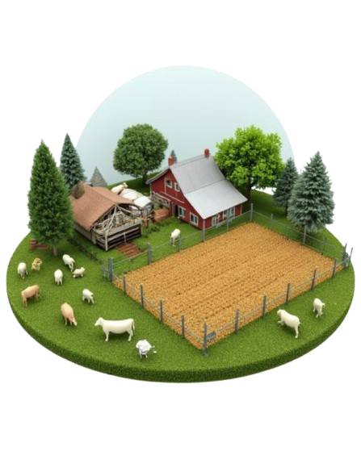

Seja bem-vindo ao portal do Futuro Rural. Descubra como a tecnologia, o manejo consciente e o respeito à biodiversidade influenciam a produção de alimentos no Brasil e no mundo.
Explorar Conteúdo ↓O Plano de Agricultura de Baixa Emissão de Carbono é uma estratégia do Governo Federal Brasileiro, criado em 2010, com o intuito de promover a redução da emissão de gases de efeito estufa na agropecuária, usar a natureza de forma mais inteligente e criar uma produção mais resistente, preparando o setor para enfrentar as mudanças no clima.
Sistema Integrado: Esses sistemas reúnem diferentes atividades — como agricultura, pecuária e silvicultura — em uma mesma área para trabalharem em conjunto. Considerados os modelos mais sustentáveis para a produção de alimentos, fibras e energia, eles variam em complexidade. No plano ABC+, o foco está em duas modalidades: os Sistemas de Integração Lavoura-Pecuária-Floresta (ILPF) e os Sistemas Agroflorestais (SAF).
Bioinsumos: O uso de produtos biológicos na agricultura melhora a produção e ajuda a proteger o meio ambiente, sendo que os inoculantes (insumos biológicos compostos por microrganismos vivos, como bactérias e fungos) são muito usados no Brasil. Antes, o Plano ABC focava apenas na Fixação Biológica de Nitrogênio (FBN). Agora, na fase ABC+, o programa aumentou esse incentivo: além da FBN, ele também apoia outros microrganismos que ajudam as plantas a crescer e a aproveitar melhor os nutrientes, além do uso de defensores naturais para o controle de pragas.
Terminação Intensiva: Essa técnica melhora a alimentação dos bois na fase final de criação através do confinamento ou do uso de ração no pasto. Para isso, os animais recebem alimentos mais ricos em energia, como grãos e farelos. Esse processo reduz a emissão de gases poluentes de duas formas: diminui diretamente o metano gerado na digestão do boi e, indiretamente, acelera o crescimento do animal, permitindo que ele seja abatido mais jovem.
A Agrofloresta aproveita a capacidade das árvores de armazenar carbono, retirar água e nutrientes do solo, abrigar a biodiversidade, construir matéria orgânica do solo e carbono, e registrar a história climática. Os sistemas agroflorestais combinam o cultivo de plantas agrícolas e árvores em uma mesma área.
Essa prática imita a estrutura e a dinâmica de uma floresta natural, tratando o solo contra erosões, enriquecendo o ecossistema local com nutrientes e gerando uma produção diversificada e sustentável ao produtor. Ela pode reduzir a erosão do solo em 50 por cento e aumentar o carbono do solo em 21%.
Mais do que apenas conservar, a agricultura regenerativa busca restaurar a saúde do meio ambiente. Ela foca no reestabelecimento biológico do solo, no aumento da biodiversidade, na otimização do ciclo da água e no sequestro de carbono ativo, criando sistemas de produção resilientes e independentes de químicos pesados.
A agricultura regenerativa vai além da sustentabilidade porque seu objetivo é recuperar os ecossistemas e a saúde do solo. Usando práticas como a rotação de culturas, a terra sempre coberta e a integração de árvores e animais, esse sistema aumenta a biodiversidade e ajuda o solo a reter mais água e nutrientes. Além disso, ela se torna uma grande aliada contra o aquecimento global, já que solos saudáveis conseguem capturar e guardar muito mais carbono da atmosfera.
O sistema indoor (ou agricultura em ambiente controlado) consiste em cultivar plantas dentro de locais fechados, como galpões, prédios ou contêineres, sem depender do solo ou do clima do lado de fora. Nesse modelo, tudo é controlado artificialmente por tecnologia: lâmpadas especiais de LED substituem o sol, sensores regulam a temperatura e a umidade, e as plantas recebem água e nutrientes direto nas suas raíces por meio de sistemas como a hidroponia (cultivo na água). Como as plantas costumam ser empilhadas em várias prateleiras para aproveitar o espaço vertical, o sistema também é muito conhecido como fazenda vertical.
Suas escolhas definem os rumos da nossa sobrevivência e a saúde do planeta. Você está pronto para assumir o gerenciamento de uma propriedade e testar seu impacto ambiental?

Escolha com sabedoria como gerenciar sua agropecuária para balancear produtividade e conservação.